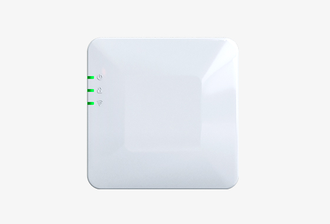
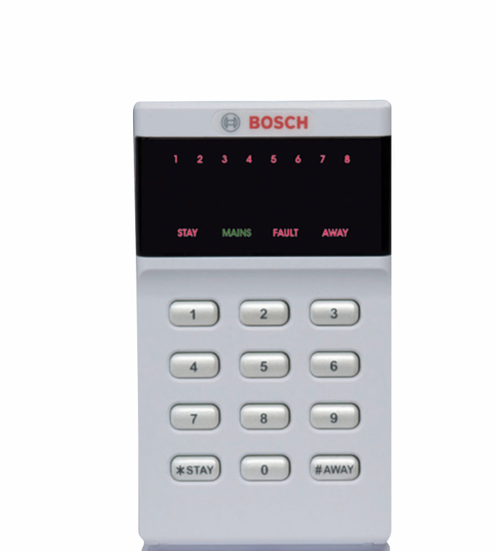
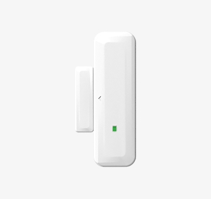
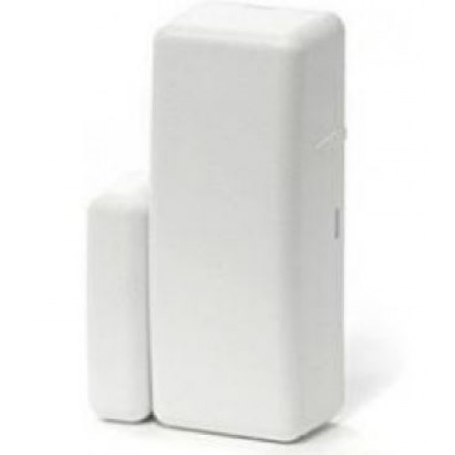

Alarm Sistemleri ve Güvenlik Sistemleri Rehberi
Sözlükvari bir ifadeye ihtiyacımız varsa şöyle diyebilriz: Güvenlik toplum yaşamında yasal düzenin aksamadan yürütülmesi, kişilerin korkusuzca yaşayabilmesi durumudur.[1]
Risk Nedir?
Explore MoreGüvenlik terminolojisinde 'risk' kelimesi, normal kabul edilen bir durumdayken, istenmeyen bir durum değişikliğinin olasılığını ifade etmek için kullanılır.[2]
Güvenlik, başkalarının neden olduğu potansiyel zarara veya diğer istenmeyen zorlayıcı değişikliklerden korunmak ve bunlara karşı dirençli olabilmeyi ifade eder. Diğer bir ifadeyle düşman güçlerden korunma anlamına geldiği gibi herhangi bir zarara uğramama durumunu da ifade eder.
Galat-ı meşhur bir kullanımı ise şu şekildedir: amacı, istenilen güvenlik durumunu sağlayacak eylem ve bireyler için de kullanılır. Örneğin güvenlik görevlilerine güvenlik denmesi gibi.
Güvenlik Odağı/Referansı (Security Referent)
İngilizce'de security referent denilen kavram güvenlik durumu tanımının kimi referans aldığı yahut odağında kim olduğunu ifade eder. Örneğin bir hırsızlıktan korunmak için kurulan bir okul alarm sistemini düşünelim. Bu durumda, güvenlik odağı okuldaki taşınabilir ve madden değerli olan her şeyi kapsayabilir. Ya da hukuk ile garanti altına alınan haklar, güçsüz veya az sayıda olan azınlıkları odağına almıştır diyebiliriz. Güvenlik odağı bir güvenlik sisteminden hem fayda sağlayan hem de onun kurbanı olan olabilir.
Bu kısımdan itibaren güvenlik odağı kelimesini seçmekte ve bununla devam etmekte karar kılıyorum.
Güvenlik Bağlamı
Güvenlik odağının çevresiyle ilişkisini tanımlayan kavramdır. Aynı çevre farklı odaklar için farklı güvenlik durumlarını ifade edecektir. Örneğin sosyal bir durumu ele aldığımızda kimileri için güvenli olabilecek süreçler, bir çokları için zararlı olabilir. Buradaki denge mekanizmasını elbette hukuk sağlayacaktır. Güvenliğin bir endişe unsuru sayıldığı ana güvenlik bağlamları olarak şunları sayabiliriz.
- IT Dünyası: İletişim, bilgi, bilgisayar güvenliği vb.
- Fiziksel Dünya: Alt yapı, çevre, gıda, ev güvenliği, iş yeri güvenliği
- Politik Sistem: Ulusal, uluslararası ve insanlığa dair güvenlik
- Parasal Sistem: Sosyal ve finansal güvenlik vb.
Güvenlik odağının çevresiyle ilişkisini tanımlayan kavramdır. Aynı çevre farklı odaklar için farklı güvenlik durumlarını ifade edecektir. Örneğin sosyal bir durumu ele aldığımızda kimileri için güvenli olabilecek süreçler, bir çokları için zararlı olabilir. Buradaki denge mekanizmasını elbette hukuk sağlayacaktır.
Zorlayıcı Güvenlik Önlemler
Kendi gücünü çevresi üzerinde değişikliğe sebebiyet verdirtebilmek olarak tanımlayabiliriz. Aktif bir savunma ve önleme amacı gözetilir. Silahlı bir polis memurunun olduğu ortamda suç işlemeye meğilli insanların bundan kaçınacağı durumu örnek olarak verebiliriz.
Koruyucu Güvenlik Önlemleri
Olası tehdit aktörünü eyleminden vazgeçirmeye yönelik sistemlerdir. Burada yalnızca savunma maksadı gözetilir diyebiliriz. Bu tarlaya çekilen bir çit olabileceği gibi, kapıdaki kilit veya bilgisayarlarımızdaki casus-koruma yazılımı da olabilir.
Uyarıcı Güvenlik Önlemleri
Kamuoyunda alarm sistemleri olarak bilinen ve tehdit unsurlarını algılama ve güvenlik odaklarını uyarma işlevine sahip olan sistemlerdir.
Güvenlik Türleri
Explore MoreGüvenlik kelimesi geniş bir anlam ifade eder. Bir çok alt kategoriye ayırmak mümkündür. Güvenlik türlerinin bazılarından örnekler verelim.
Bilgi Güvenliği
Bilginin izinsiz kullanılması, dağıtılması, yok edilmesi ya da kamuya açık hale getirilmesi gibi istenmeyen durumları engellemek amacı taşır. Ülkemizde, bilgi güvenliği standardı olarak uluslararası standartların Türkçesi yürürlüktedir. (TS EN ISO/IEC 27001:2017)[7]
Ayrıca belge güvenliğinden bahsetmemiz gerekirse, Milli Savunma Bakanlığı Savunma Sanayii Güvenliği Yönergesi[8] ile bilgi ve belgeler “ÇOK GİZLİ”, “GİZLİ”, “ÖZEL”, ve “HİZMETE ÖZEL” olmak üzere 4’lü sınıflandırmaya tabi tutulur.
Güvenlik kelimesi geniş bir anlam ifade eder. Bir çok alt kategoriye ayırmak mümkündür. Güvenlik türlerinin bazılarından örnekler verelim.
- İnternet güvenliği
- Bilgisayar güvenliği
- Mobil güvenlik
- Ağ güvenliği
- Belge güvenliği
Bilişim Güvenliği
Elektronik aygıt ve yazılımların kullanımından doğabilecek riskleri ve tehlikeleri inceleyen bilişim teknolojisi dalıdır. Örneğin, kamu kurumlarında tescilli yazılım kullanımının azaltılması, açık kaynak yazılımlara yönelinmesi bu bağlamda anlaşılmalıdır.
Ülkemizde Tübitak bünyesinde kurulan UEKAE (Ulusal Elektronik ve Kriptoloji Araştırma Enstitüsü) bu konuda çalışmaktadır.
UEKAE misyonunu şöyle tanımlamaktadır: "Ulusal Elektronik ve Kriptoloji Araştırma Enstitüsü ülkemizdeki stratejik kamu kurumlarının ihtiyaç duyduğu bilgi güvenliği ve elektronik sistem projelerini geliştirirken aynı zamanda Türkiye'nin bilgi güvenliği birikimine önemli katkılar sağlayan bir Ar-Ge kuruluşudur."
Gıda Güvenliği
Beslenme ve gıda tüketiminden kaynaklı hastalıkları engellemek amacıyla gıdaların işlenmesi ve depolanması hususunda izlenen güvenlik önlemleri dizisidir.Ayrıca bir başka anlamı da uluslararası ilişkilere konu olan ve açlık kıtlık gibi durumların önlenmesi amacını taşıyan güvenlik türüdür.
Fiziki Güvenlik
Bu rehberin asıl odaklanacağı başlık olan fiziksel güvenlik kavramıdır. Saldırgan veya sabotajcının bir eve, iş yerine veya bir tesise vereceği zararları önlemek amacı taşır. Detaylı şekilde fiziksel güvenlikten bahsedeceğiz.
Fiziki Güvenlik ve Güvenlik Sistemleri
Fiziki güvenliği sağlamak için genel olarak insan iş gücünden yararlanılır. Bunun yanında elektronik cihazlar yardımcı etmen olarak kullanılmaktadır. Teknolojik ilerlemeler ve gelişmelerin elektronik sistemlerin fiyatlarını ucuzlatmasıyla birlikte bu yardımcı güvenlik unsurları yavaş yavaş insan iş gücünün yerini almaktadır.
Biz bu rehberde: Alarm sistemleri, güvenlik kamera sistemleri ve yangın alarm sistemlerinden bahsetmeyi umuyoruz.
Alarm Sistemleri
Alarm Sistemleri Tarihçesi
Alarm ve Alarm Durumu
Alarm, tehlikeli ya da tehlike oluşturabilecek bir durumu bildirmek için verilen işaret, sinyal anlamına gelir. Alarm durumu ise olası tehlikeyi önlemek için hazır ve uyanık vaziyette olma anlamı taşır.
Alarm Sistemleri ve Güvenlik Sistemleri
Alarm sistemleri denildiğinde sektör içerisinde, gerek İzmir alarm sistemleri gerek İstanbul alarm sistemleri sektörü olsun, birden fazla terim kullanılmaktadır.
Güvenlik Sistemleri ve Alarm Sistemleri Arasındaki Farklar Nelerdir?
Alarm Sistemleri ve Özellikleri
Alarm Sistemleri Ne İşe Yarar?
Alarm Sistemleri Nasıl Çalışır?
Bir alarm sistemi için yerine getirmesini beklediğimiz temel fonksiyon ve görevler şunlardır: algılama, değerlendirme, uyarma. Bu üç fonksiyonun doğru çalışabilmesi caydırıcılık etkisi yaratacağından bizim asıl beklentimiz olan koruma gerçekleşebilecek ve bizi daha güvende tutacaktır.
Güvenlik Alarm Sistemleri
Çoğu ev güvenlik sisteminin en önemli kısmı, ev güvenliğini ve zayıf noktalarını gene güvenlik perspektifinden anlamaktır.
Tespit/Algılama
Sensör ve dedektörler vasıtasıyla çevresini gözlemlemesi
Değerlendirme
Kendisine verili olan tanımlamalar gereğince algıladıklarının olağan olup olmadığının ayrımını yapmak.
Uyarı/İhbar
Olağan dışı durumda belirlenmiş protokolleri yerine getirme.
Caydırma/Koruma
İlk üç işlevini yerine getirdiği var sayılan bir alarm sistemi tehlike etmenleri için bir caydırıcılık etkisi yaratır.
Güvenlik Alarm Sistemi Örnekleri
Güvenlik alarmlarına bir kaç örnek vermemiz gerekirse: Kızılötesi ışınlarla hareketi algılayan sensörler, yangın alarm sistemlerinde kullanılan duman dedektörleri ve izinsiz girişleri önlemek amacıyla kullanılan erişim kontrol cihazları.
O halde sırasıyla alarm sistemlerine değinelim. İlk olarak hırsız alarm sistemleri, ardından yangın alarm sistemleri.
Alarm Sistemleri ve Bileşenleri
Alarm Kontrol Paneli
Tüm sistemin bir aradalığını sağlayan en önemli bileşendir. Yalnızca hırsızlığa karşı önlem olmakla kalmayıp, aynı zamanda yangın ve acil sağlık durumları gibi konularda bizlere yardımcı olabilecek alarm sistemi bileşenidir. Sistemin beynidir diyebiliriz. Genel olarak iki tip kontrol paneli mevcuttur. Tek başına kullanılabilen ve merkeze bağlanan.
Manyetik Kontaklar
Manyetik kontaklar en bilinen alarm sistemi bileşenidir. Kapı ve pencere gibi yerlere takılırlar. İki tipi mevcuttur: en basit versiyonunda, örneğin istenmeyen bir pencerenin açılması durumunda, üzerindeki siren aktif hale gelir ve etrafa yüksek ses ile uyarı verir. Diğer tip manyetik kontaklar ise alarm paneli ile iletişime geçip sistemi durumdan haberdar ederler.
Hareket Algılayıcılar
Hareket gördüğü zaman kendisine bağlı bulunan uçlara sinyal gönderen cihazlardır. Cihazın basitliğine rağmen, kullanımı oldukça yaygın ve gereklidir. Bir hırsız alarm sistemi kurulumu yapılırken, kesinlikle kullanılması gereken cihazlardandır.
Cam Kırılma Detektörleri
Cam kırılma detektörleri, bulunduğu ortamdaki cam kırılmasını algılayıp alarm kontrol paneline bildiren elektronik aksamlardır. Eğer tehdit unsuru bir camı kırarak mülkiyetimize girmeye kalkarsa dedektör bunu anlar ve kontrol paneline bildirir.
Ağırlık Detektörleri
Ağırlık detektörleri binanın zeminine yerleştirilirler. Belirlenen ağırlığın üzerindeki cisimleri algılarlar ve binada meydana gelebilecek ağırlık değişikliklerinde sistemi bilgilendirirler.
Siren ve Flaşörler
Eğer alarm sistemi merkeze bağlı değilse, yani kendi başına çalışabilen bir alarm sistemi ise siren ve flaşörler çok daha fazla önem arz edeceklerdir. Çünkü çıkartacakları ses ve ışık ile tehdit unsurunda caydırıcı etki yaratmaları gerekir.
Hırsız Alarm Sistemleri
Hırsızlık: En Sık Karşılaşılan Güvenlik Tehdidi
Ev sahipleri için en büyük tehlike hırsızlık.
TÜİK verilerine göre Türkiye'de işlenen her 6 suçtan 1 tanesini hırsızlık oluşturuyor.[4] UNC'nin araştırmasında ise hırsızlık suçlarının %28'inde ev sahibi veya ev üyelerinden biri evdeymiş.
Ev sahipleri için en büyük güvenlik tehlikesini hırsızlık suçları oluşturuyor. Türkiye İstatistik Kurumu olan TÜİK'in 2019 yılı verilerine göre tüm suçlarda %15.2 oranı ile hırsızlık en çok işlenen suçlardan biri olmuş diyebiliriz. Bu da neredeyse, Türkiye'de işlenen her 6 suçtan birinin hırsızlık olduğunu ortaya koyuyor.
Kuzery Karolina Üniversitesinin çalışmasındaki bulgulardan biri de şu: Ev hırsızlık olaylarının %28'inde ev sahibi ya da hane halkından biri o anda evde bulunmaktaymış. Bu rakamın Türkiye'de daha farklı bir oranda olma ihtimalini de göz önünde bulundurarak gene de göz ardı etmeyelim.
Piyasada %100 etkili bir alarm sistemi olmasa da, güvenlik sistemlerinin bunun gerçekleşme olasılığını büyük ölçüde azalttığı kanıtlanmıştır.
Hırsızlar her zaman geri dönüp hızlı bir kâr için satabilecekleri eşyaları kapmak için kolay hedefleri ararlar. Çok fazla olası hedef olabileceği için ev güvenlik sistemine sahip olduğunuzu görmek onlar açısından caydırıcı bir sepeb olacaktır.
Alarm Sistemlerinin Avantajları
Hırsızlar kendileri anlatıyor: Hırsızlıkla ilgili bilgiler
Alarm sistemleri ve sağladıkları ev güvenliği ve iş güvenliği üzerine akademik çalışma örnekleri.
Kuzery Karolayna Üniversitesi'nin (UNC Charlotte) Ceza Adaleti ve Kriminoloji Departmanı tarafından yapılan ve araştırmacıların yüzlerce hüküm giymiş hırsızla yaptıkları akademik bir çalışmadan örnekler verelim.[3] Araştırmacıların 400'den fazla hükümlü ile röportajlar yaptığı "Hırsızlık Kararlarını Suçlunun Perspektifinden Anlamak" başlıklı çığır açan yeni bir araştırmasına göre, görünür güvenlik kameraları büyük bir caydırıcı unsuru olmaktalar.
Güvenli tarafta olun ve kapılarınızı ve pencerelerinizi kilitli tutun.
Hırsızlık ve hırsızlara dair diğer bulgular
Yukarıda bahsi geçen çalışmadan diğer bulguları paylaşalım.
Rutgers Üniversitesi (Rutgers University School of Criminal Justice) tarafından, kar amacı gütmeyen bir organizasyonun finansmanıyla ve Newark Polis Departmanı işbirliği ile yapılan bir çalışmaya değinelim.
Bu çalışma yerleşim bölgelerindeki hırsızlık oranlarındaki düşüş ve hırsız alarm sistemi kullanımı arasında ciddi bulgular sunmakta. Ayrıca bölge sakinleri tarafından fazla sayıda kullanıldığı durumda ise hırsızlık oranlarındaki düşüşün daha da fazla olduğundan bahsediliyor.[6] Bu yerleşim bölgelerinin bir bütün olarak, hırsızların ilk hedef seçimleri arasından çıktığı şeklinde okumak mümkün.
Birleşik Krallık'ta Leicester Üniversitesinde yapılan bir başka araştırmadan istatistikler verelim. Bu çalışmada hırsızlara soygun yapacakları yerin çevresel koşullarıyla ilgili sorular sorulmakta. Hırsızlara bir dizi seçenek sunuluyor ve bu seçeneklere sahip evlere girmeyi ne kadar çok istedikleri ve ne kadar az istedikleri şeklinde oylamaları isteniyor.
Çalışmadaki hırsızların %38'i daha önce soydukları evlere tekrar girdiklerini belirtmişler. "Tekrarlanan mağduriyet" adıyla Türkçe'ye çevirebileceğimiz bu fenomen, kriminoloji çevrelerinde "repeat victimization" olarak biliniyor. Bunun çeşitli sebepleri var ancak bunlara şu an için değinmeyeceğim. İşte bu fenomenin failleri diyebileceğimiz hırsızlara, yani daha önce soydukları evlere tekrar hırsızlık için giren kişilere yukarıdaki seçenekler arasından hangilerinin varlığından vazgeçecekleri soruluyor. Yanıtlar şu şekilde:
Alarm Sistemleri Hırsızlığı Önler mi?
Katılım sağlayanların yaklaşık% 60'ı suça konu olan eyleme girişmeden önce güvenlik kameraları aradıkları söyledi. Yaklaşık% 40'ı güvenlik kamerası varlığının onları farklı bir ev seçmeye motive ettiğini söyledi.
Bu çalışma aynı zamanda hırsızların çoğunun evlere kapı veya pencereleri kırarak girmeyi tercih ettiğini ve her ikisinin de modern güvenlik sistemi teknolojisi ile yoğun bir şekilde izlenebildiğini belirledi. Aşağıda bu çalışmaya ait diğer bulguları okuyacaksınız.
Her 5 hırsızdan bir tanesi telefon ve alarm kablosunu gelişmiş yöntemlerle kesmeye çalıştıklarını belirtmiş.
Tornavida hırsızların üzerlerinde en çok taşıdıkları ekipman olurken ardından çekiç gelmektemiş
Hırsızların %79'u en çok nakit para bulmakla ilgilendiklerini belirtmişler. Ardından %68 ile mücevher ve %56 ile elektronik cihazlar gelmekteymiş.
Hırsızlığı gerçekleştirenlerin %65'i hızlı bir şekilde çalıntı malları ellerinden çıkarmaya çalıştıklarını belirtmişler. Ellerinde tutma kararı alanlar ise malzemeleri bir arkadaşının evinde gizleme yolunu seçiyormuş.
Hırsızların büyük çoğunluğu çaldıkları eşyaları yabancılara ya da bir arkadaşlarına satmayı seçerlerken, internet üzerinden satış yapanların sayıları azınlıkta kalmış.
Hırsızların büyük çoğunluğu bir sürpriz ile karşılaşmamak adına, bir eve girmeden önce o evde alarm sistemi veya güvenlik kamerası olup olmadığına bakmaktaymış.
Alarm Sistemlerinin Dezavantajları
Hırsız alarm sistemlerinin en büyük dezavantajları yanlış alarmlar ile emniyetin meşgul edilmesi durumudur. Yanlış hırsız alarmının çeşitli sebepleri olabilir.
- Kullanıcı hataları
- Alarm paneline yanlış kod girme
- Alarm paneli aktif durumdayken kapı ve pencerenin açık unutulması
- Alarm sisteminin evin bir üyesi olan evcil hayvanı tehlike sanması
- Hatalı ya da uygun olmayan alarm cihazı seçimi
- Zayıf kurulum (hareket dedektörlerinin görüş alanının doğru hesaplanamaması vb.)
- Kötü hava koşulları
Bir başka ilginç bilgi ise Amerika Birleşik Devletlerindeki bir araştırmadan geliyor. Alarm panelini aktif duruma getirme ve kapatma konusundaki sorumluluğun paylaşılır olmasında dolayı, iş yerlerinde yanlış alarm oranı, oturma alanlarındakine kıyasla 3 kat daha fazla.[9]
Temple Üniversitesinden (Philadelphia) Simon Hakim'in 1995 yılında yayımladığı makalede hırsız alarm sistemlerinin avantajlarını ve sosyal maliyetlerini araştırdığını görüyoruz. Kendisinin de makalenin yazarlarından biri olduğu bir diğer akademik çalışmada sonuçlardan şu şekilde bahsediliyor:
Yanlış alarm aktivasyonlarının sayısının büyüklüğüne bakılmaksızın, alarm sistemlerinin varlığı yasal işlerle uğraşan nüfusa net bir fayda sağladığı görülmektedir.
Hem Amerika Birleşik Devletleri hem de Birleşik Krallık'tan yapılan araştırmalar, hırsızlık alarmlarının en etkili hırsızlık caydırıcı önlemler arasında olduğunu göstermiştir.
Hırsız Alarm Sistemleri Kurulumu
Hırsız alarm sistemleri daha önce de bahsettiğimiz üzere ev, apartman gibi konutları ve de iş yerlerini hırsızlık, gasp ve sabotajdan korumak adına oluşturulan güvenlik sistemleridir.
Daha sonra bahsedeceğimiz üzere bu alarm sistemleri bir merkeze bağlanarak gerekli prosedürleri uygulayabilirler. Özellikle yeni nesil alarm sistemleri internet bağlantısı ile bir merkeze ya da uzak kullanıcıya, örneğin şehir dışında olan ev sahibine, raporlama yapabilmektedirler.
Akıllı ev otomasyon ya da akıllı ev güvenlik sistemleri olarak adlandırılan bu ürünlere zamanı gelince değineceğiz.
Hırsız alarm sistemleri ihtiyaçlarınıza uygun olarak bir alarm sistemleri firması profesyonelleri tarafından belirlenen güvenlik bileşenleri ile oluşturulur.
Güvenlik Keşfi Nedir?
Bir alarm sistemi kurmaya karar verdikten sonraki ilk aşamaya güvenlik keşfi adı verilir. Çoğunlukla alarm sistemleri firmasının tecrübeli ve profesyonel uzmanları tarafından gerçekleşen bu keşif aşamasında, evinizin yahut iş yerinizin güvenlik açıkları tespit edilir.
Son zamanlarda özellikle "Kendin-Yap" (Do-it Yourself) tipi ev alarmlarının ortaya çıkmasıyla kişilerin kendilerinin verecekleri kararlar doğrultusunda bu güvenlik keşfini gerçekleştirmeleri tabi ki muhtemeldir.
Bu anlamda yeni kurulmuş bir alarm sistemi firması ile akıllı bir mülk sahibinin tespitleri arasında çok da fark gözetilmeyebilir. Ancak son tahlilde tecrübe günün kazananı olacaktır. Sektördeki tecrübeli bir profesyonelin yıllar içerisinde gördüğü tehlikeler ve hırsızlık olayları ile güvenliğinizi bir üst seviyeye çıkarmanız pek ala mümkündür..
Alarm Sistemleri Tipleri
1. Kendi Başına Çalışabilen Alarm Sistemleri
Kendi başına çalışabilen alarm tipleri hiç bir merkeze bağlı değildir. Evinize alıp kullanabileceğiniz alarm tipleridir. Caydırma unsuru olarak siren ve flaşörler kullanılır. Araba alarmları bunun en tipik örnekleridir.
Tehlike anında alarm çalmaya başlar ve saldırganın oradan uzaklaşması beklenilir. Ya da sesi ve ışığı duyan bir kimsenin dikkatinin o yöne çekileceği ve hırsızın tanınmamak için hızlıca uzaklaşacağı varsayılır.
Bu tip alarm sistemlerinde siren ve flaşör hayati öneme sahiptir. Dolayısıyla, eve alarm sistemi kurulumu yapmak isteyenler cihazlarının bu özelliklerine dikkat etmelidirler.
2. Merkezi İstasyona Bağlı Alarm Sistemleri
Daha önce alarm haber alma merkezinin ne olduğundan bahsetmiştik. Bu tip alarm sistemlerinde tehlike anında çeşitli protokoller kullanılarak hizmet alınan güvenlik sistemleri firmasına sinyal gönderilir. Ardından belirlenmiş rutin işlemler gerçekleştirilir. Mülk sahibi aranabilir ve durumdan haberi olup olmadığı sorulabilir. Emniyet birimlerine iletilip, polisin devreye girmesi sağlanabilir.